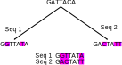
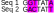
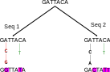
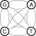
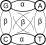
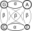
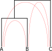
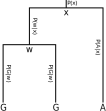
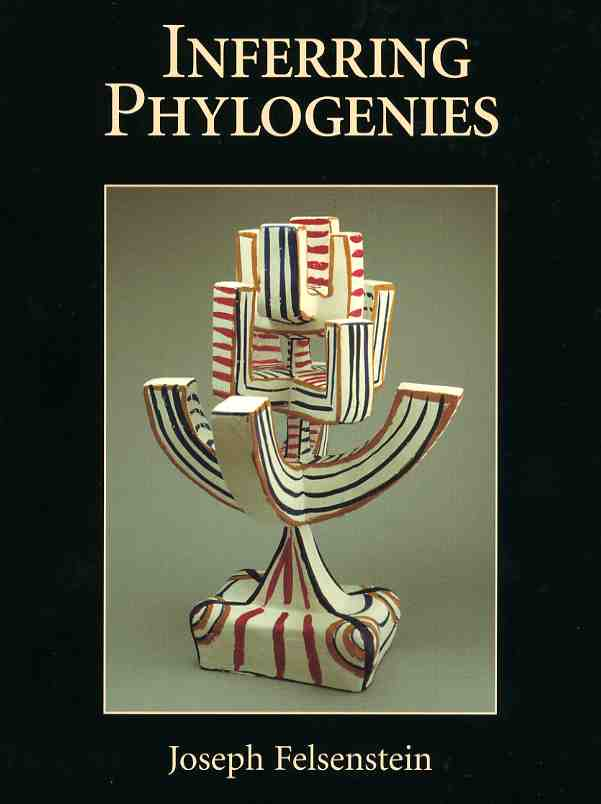
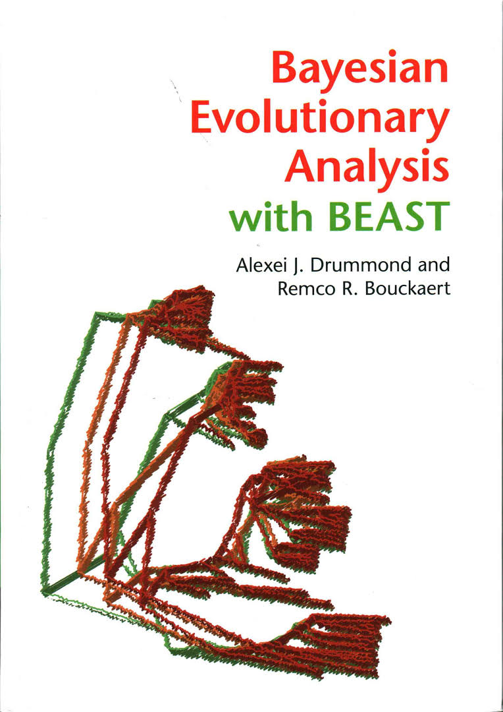

Modelling neutral sequence evolution
Why use models?
We need a model to relate what we observe (data) to what we want to
know (hypotheses and parameters).
Inference is not possible without a model!
We almost invariably choose
probabilistic models for molecular evolution, because we don't
know enough about mutation to construct a deterministic model.
Modelling genetic change
- Given two or more aligned nucleotide or amino acid sequences,
usually the first goal is to calculate some measure of sequence
similarity (or conversely distance).
- The easiest distance to compute is the p-distance: the number of
differences between two aligned sequences relative to their length.
- The p-distance is the Hamming distance normalized by the
length of the sequence. Therefore it is the proportion of positions
at which the sites differ.
- The p-distance can also be considered the probability that the two
sequences differ at a random site.
Modelling genetic change

p-distance

$p$-distance = 3/7 $\simeq 0.43$.
- Proportion of differences between two sequences.
- Usually underestimates the true distance: genetic (or evolutionary) distance $d$.
Multiple, parallel and back-substitutions

Relationship between $p$-distance and genetic distance
Continuous-time Markov chains (CTMCs)
- CTMCs are the continuous-time generalization of Markov chains: state $X(t)$ is
a function of a continuous time parameter.
- Obey the Chapman-Kolmogorov equation:
$$p(x_1,t_1|x_0,t_0)=\sum_{x_i}p(x_1,t_1|x_i,t_i)p(x_i,t_i|x_0,t_0)$$
where $p(x_1,t_1)\equiv P(X(t_1)=x_1)$ and $t_0<t_i<t_1$.
Informally: you can find the probability of going from state $x_0$ to $x_1$ by averaging over all
intermediate states $x_i$ at intermediate time $t_i$.
For those interested:
- Can be written in the following differential form:
\begin{align*}
\frac{d}{dt}p(x,t|x_0,t_0)&=\sum_{x'\neq x}\left[p(x',t|x_0,t_0)Q_{x'x}-p(x,t|x_0,_0)Q_{xx'}\right]\\
&=\sum_{x'}Q_{x'x}p(x',t|x_0,t_0)
\end{align*}
defining $Q_{xx}=-\sum_{x'\neq x}Q_{xx'}$.
- This form is known as the
Master Equation or
Kolmogorov forward equation. Linear, so solution is "simply" $\vec{p}(t)=\exp[Qt]\vec{p}(0)$.
Relationship between Q and P in Continuous-time Markov models
Instantaneous Rate Matrix Q
- Describes rates of character changes in an infinitesimal time interval
- Characters can be nucleotides or amino acids
- Diagonal elements are defined such that the sum of each row is zero
Transition Probability Matrix P(t)
- Describes probabilities of character changes over time interval t
- Elements are probabilities of observing a specific character at time t, given the starting character at time 0
Relationship between $Q$ and $P(t)$
$P(t) = exp(Qt)$, where $exp(Qt)$ is the matrix exponential of the product of $Q$ and $t$
- If you know the instantaneous rates (Q), you can calculate the probabilities over any time interval $t$ using the matrix exponential
- Matrix exponential can be calculated using eigenvalue decomposition or Taylor series expansion
Stationary Distribution
- As $t$ approaches infinity, $P(t)$ converges to the stationary distribution
- Represents long-term probabilities of observing each character, independent of the starting character
CTMC example
Consider a system with two states (0 and 1) and a transition rate matrix
$$Q = \left[\begin{array}{cc}
- & 2 \\
1 & -
\end{array}\right]$$
Gives rise to the following trajectories:
Time $\Delta t$ spent in state before transition:
$$ P(\Delta t|x) = \lambda e^{-\lambda \Delta t}$$
where $\lambda = \sum_{x'\neq x}Q_{xx'} = -Q_{xx}$.
Time-reversible CTMCs and detailed balance
A CTMC is time-reversible if and only if it satisfies the property:
\begin{equation}
\pi_iQ_{ij} = \pi_jQ_{ji},
\end{equation}
or equivalently the detailed balance property: $$\pi_iP_{ij}(t) = \pi_jP_{ji}(t).$$
From this it can be shown that a CTMC is time-reversible iff there exists a row-vector of state probabilities $\Pi$ such that: \begin{equation} \Pi Q = 0 \end{equation}
Consider again a system with two states (0 and 1) and a transition rate matrix:
$$Q = \left[\begin{array}{cc}
-2 & 2 \\
1 & -1
\end{array}\right]$$
Then it is easy to show that $\Pi = [\frac{1}{3}, \frac{2}{3}]$ is a solution, so that this CTMC is time-reversible and $\Pi$ is the equilibrium distribution over states.
From rates to probabilities: matrix exponential
Transition probability matrix is the matrix exponential of the instantaneous rate matrix:
\[ P(t) = \exp(Q t) = \sum_{k = 0}^{\infty} \frac{ (Q t)^k}{k!} = \mathbf I + tQ + \frac{(t \mathbf Q)^2}{2} + \frac{(t \mathbf Q)^3}{6} + \ldots\]
Can sometimes calculate analytically
For general \(Q\), use numerical methods from numerical libraries.
The matrix exponential follows the rules we would hope for the exponential function. For example:
- \(\exp(\mathbf 0) = \mathbf I_n\)
- when \(\mathbf{AB} = \mathbf{BA}\), \(\exp(\mathbf{A+B}) =\exp(\mathbf{A})\exp(\mathbf{B})\)
- When \(\mathbf B\) is invertible, \(\exp(\mathbf{BAB}^{-1}) = \mathbf{B}\exp(\mathbf{A})\mathbf B^{-1}\)
- If \(\mathbf A = \mathrm{diag}(a_1,\ldots,a_n)\), then \(\exp(\mathbf A) = \mathrm{diag}(\exp(a_1),\ldots,\exp(a_n))\).
Matrix exponential example
Suppose there are two states, 0 and 1.
Let the rate matrix be
\[Q =
\renewcommand{\arraystretch}{1.25}
\left[ \begin{array}{cc}
-1 & 1 \\
0.6 & -0.6
\end{array} \right].\]
To get the probability matrix, use the matrix exponential:
\[ P(1) = \exp(1.Q) = \mathbf I + Q + \frac{ \mathbf Q^2}{2} + \frac{ \mathbf Q^3}{6} + \ldots = \renewcommand{\arraystretch}{1.25}
\left[ \begin{array}{cc}
0.501 & 0.499 \\
0.299 & 0.701
\end{array} \right] \]
So if we started in state 1 at time 0, at time 1 there is a 29.9% chance of being in state 0 and a 70.1% chance of being in state 1.
Matrix exponential example
By time 2, the preference for state 1 is obvious:
\[ P(2) = \exp(2Q) = \renewcommand{\arraystretch}{1.25}
\left[ \begin{array}{cc}
0.400 & 0.600 \\
0.360 & 0.640
\end{array} \right] \]
Remember, can calculate for any value of \(t\), not just integers:
\[ P(0.234) = \exp(0.234 \times Q) = \renewcommand{\arraystretch}{1.25}
\left[ \begin{array}{cc}
0.805 & 0.195 \\
0.117 & 0.883
\end{array} \right] \]
Matrix exponential example
If we ran it for an infinitely long period of time, get the same probabilities regardless of start state:
\[ P(\infty ) =\renewcommand{\arraystretch}{1.25}
\left[ \begin{array}{cc}
0.375 & 0.625 \\
0.375 & 0.625
\end{array} \right] \]
Each row is a copy of the equilibrium distribution or stationary distribution for the process.
Want this property of stationarity for models of DNA substitution so that
\[ P(\infty ) =\renewcommand{\arraystretch}{1.25}
\left[ \begin{array}{cccc}
\pi_A & \pi_C & \pi_G & \pi_T \\
\pi_A & \pi_C & \pi_G & \pi_T \\
\pi_A & \pi_C & \pi_G & \pi_T \\
\pi_A & \pi_C & \pi_G & \pi_T
\end{array} \right] \]
\(\pi = [\pi_A , \pi_C , \pi_G , \pi_T]\) is the stationary distribution of the bases.
Jukes-Cantor model of nucleotide substitution

$$
Q = \mu\left[\begin{array}{cccc}
-1 & \frac{1}{3} & \frac{1}{3} & \frac{1}{3}\\
\frac{1}{3} & -1 & \frac{1}{3} & \frac{1}{3}\\
\frac{1}{3} & \frac{1}{3} & -1 & \frac{1}{3}\\
\frac{1}{3} & \frac{1}{3} & \frac{1}{3} &-1
\end{array}\right]
$$
\begin{align*}
P(X(t)=j|X(0)=i) = P_{ij}(t) &= \left[e^{Qt}\right]_{ij}\\
&=\left\{\begin{array}{ll}
\frac{1}{4}+\frac{3}{4}e^{-\frac{4}{3}\mu t} & \text{for } i=j\\
\frac{1}{4}-\frac{1}{4}e^{-\frac{4}{3}\mu t} & \text{for } i\neq j
\end{array}\right.
\end{align*}
Genetic distance under Jukes-Cantor
The probability that a site is distinct after time $t$ is
\begin{align*}
p_{\text{diff}}&=\sum_{x'\neq x} P(X(t)=x'|X(0)=x)\\
&=\frac{3}{4} - \frac{3}{4}e^{-\frac{4}{3}\mu t}
\end{align*}
Equating $p_{\text{diff}}$ with the
$p$-distance and solving for $\mu t$ yields
$$\hat{d} = \widehat{\mu t} = -\frac{3}{4}\log(1-\frac{4}{3}p).$$
- Accounts for multiple, parallel, back-substitutions.
- Only correct if $p$ is exact: infinite sequences.
- Diverges if $p≥3/4$.
Other CTMC substitution models: Kimura 80

$$
Q = \left[\begin{array}{cccc}
\cdot & \alpha & \beta & \beta \\
\alpha & \cdot & \beta & \beta \\
\beta & \beta & \cdot & \alpha \\
\beta & \beta & \alpha &\cdot
\end{array}\right]
$$
- Also "Kimura two parameter" model.
- Allows different rates for transitions and transversions.
- Equilibrium base frequencies equal.
Other CTMC substitution models: HKY

$$
Q = \left[\begin{array}{cccc}
\cdot & \alpha\pi_G & \beta\pi_G & \beta\pi_G \\
\alpha\pi_A & \cdot & \beta\pi_A & \beta\pi_A \\
\beta\pi_C & \beta\pi_C & \cdot & \alpha\pi_C \\
\beta\pi_T & \beta\pi_T & \alpha\pi_T &\cdot
\end{array}\right]
$$
- Due to Hasegawa, Kishino, Yano (1985).
- Allows different transition transversion rates.
- Allows equilibrium base frequencies to differ.
- Most complex model for which analytical solutions are available.
Other CTMC substitution models: GTR
$$
Q = \left[\begin{array}{cccc}
\cdot & \alpha\pi_G & \beta\pi_G & \gamma\pi_G \\
\alpha\pi_A & \cdot & \delta\pi_A & \epsilon\pi_A \\
\beta\pi_C & \delta\pi_C & \cdot & \eta\pi_C \\
\gamma\pi_T & \epsilon\pi_T & \eta\pi_T &\cdot
\end{array}\right]
$$
- All models so-far have been reversible.
- GTR is the most general time-reversible model.
- Reversibility is a mathematical convenience: no biological reason!
- No useful analytical solution available (matrix exponential doesn't count).
Variable rates among sites
Gamma distribution rate heterogeneity allows for variation
in evolutionary rate among sites according to
$$f(r) = \frac{\alpha^{\alpha}}{\Gamma(\alpha)}r^{\alpha-1}e^{-\alpha r}$$
Analytical solution exists for JC distance with site rate heterogeneity:
$$\hat{d}=-\frac{3}{4}\alpha\left[1-\left(1-\frac{4}{3}p\right)^{-1/\alpha}\right]$$
Genetic distance variation between models
- HIV-1B vs HIV-O/SIVcpz/HIV-1C: env gene:
| $p$-distance | JC69 | K80 | Tajima-Nei |
| HIV-O | 0.391 | 0.552 | 0.560 | 0.572 |
| SIVcpz | 0.266 | 0.337 | 0.340 | 0.427 |
| HIV-1C | 0.163 | 0.184 | 0.187 | 0.189 |
- HIV-1B vs HIV-O/HIV-1C: pol gene:
| $p$-distance | JC69 | K80 | Tajima-Nei |
| HIV-O | 0.257 | 0.315 | 0.318 | 0.324 |
| HIV-1C | 0.103 | 0.111 | 0.113 | 0.114 |
Least-squares Phylogenetic Inference
- Can use genetic distance as the basis for least-squares-based phylogenetic inference.
- Define cost of tree as the (weighted) sum of the squares of the
difference between the genetic distance on the tree and the
distance estimated from the sequence alignment:
$$C(T) = \sum_i\sum_j w_{ij}(d_{ij}(T)-\hat{d}_{ij})^2$$
- Search for tree $T$ with lowest $C(T)$.

Comments:
- Ignores correlations due to shared ancestry.
- Consistent estimator: converges to truth in the limit of infinitely long alignment.
The Likelihood Function
The likelihood for a parameter $\theta$ under model $M$ and given data $D$ is defined as
$L(\theta|D,M)\equiv P(D|\theta,M)$.
The likelihood of $\theta$ is NOT a probability distribution over $\theta$!
Example:
- Coin tossed 5 times (identical, independent): $D=(H,T,T,H,T)$.
- Probability of sequence:
\begin{align*}
P(D|f)&=f\times (1-f)\times(1-f)\times f\times(1-f)\\
&=f^2(1-f)^3\\
&=L(f|D)
\end{align*}
Maximum likelihood inference
Sensible methods of parameter estimation from empirical data often
correspond to values which maximize the likelihood function.
Maximum likelihood estimate of coin fairness parameter $f$ for $n$ heads:
$$\log L(f|D) = n\log f + (N-n)\log(1-f)$$
$$\left.\frac{\partial}{\partial f}\log L(f|D)\right|_{f=f_{ML}} = \frac{n}{f_{ML}} - \frac{N-n}{1-f_{ML}} = 0$$
$$\implies f_{ML} = \frac{n}{N}$$
What is the likelihood of a tree?

- $$L(T|A)\equiv P(A|T) = \sum_x\sum_w P(x)P(A|x)P(w|x)P(G|w)P(G|w)$$
- For $n$ taxa there are $4^{n-1}$ possible internal node states!
- Solve using Dynamic Programming!
Felsenstein's Pruning Algorithm
- Introduced by Joseph Felsenstein, 1973.
- Recursion based on the conditional likelihood of a subtree below node $k$ having state $s$: $L_k(s)$.
- For leaves, $L_k(s)=\delta_{s,l}$ where $l$ is the leaf state.
For internal nodes,
$$L_k(s) = \left(\sum_xP(x|s)L_{c_l}(x)\right)\left(\sum_yP(y|s)L_{c_r}(y)\right)$$
Time complexity for $m$ sites: $m(n-1)4^2$. This is the workhorse of computational phylogenetics.
Maximum likelihood for Phylogenetics
- PhyML (Guindon and Gascuel, 2003)
- Hill-climbing algorithm which attempts to find ML trees.
- RAxML (e.g. Stamatakis, 2005)
- Another hill-climbing algorithm, optimized for large trees.
- FastTree (Price, Dehal, Arkin, 2009)
- Uses efficient Neighbour-Joining algorithm to find starting tree.
- Updates tree using heuristics based on tree length.
- Inference from alignments of $>10^5$ sequences feasible.
Problems with ML
- Only ever gives point estimates: no indication of uncertainty.
- Addressed using more ad hocery: bootstrap algorithms.
- Lacks rigorous theoretical basis: $L(\theta|D)$ is not a probability!
- No clear way of incorporating additional (prior?) information into the analysis.
Need a better approach!
Summary
- The genetic distance between sequence pairs can be estimated using
a CTMC model for neutral molecular evolution.
- Addresses some of the problems with the parsimony approach.
- Have focused on 4 state DNA models, but it is possible to consider
models for proteins (20 amino acid states) and models that take
into account codons and the genetic code (64 states).
- Substitution model approaches to estimating genetic distance do not
deal with insertions and deletions of genetic material: they presuppose
a sequence alignment.
- Can be used within the context of a least-squares framework to find
best-fitting phylogenies.
- Better used as the basis for a tree likelihood.
- Likelihood can be used on its own for phylogenetic inference.
Recommended reading

